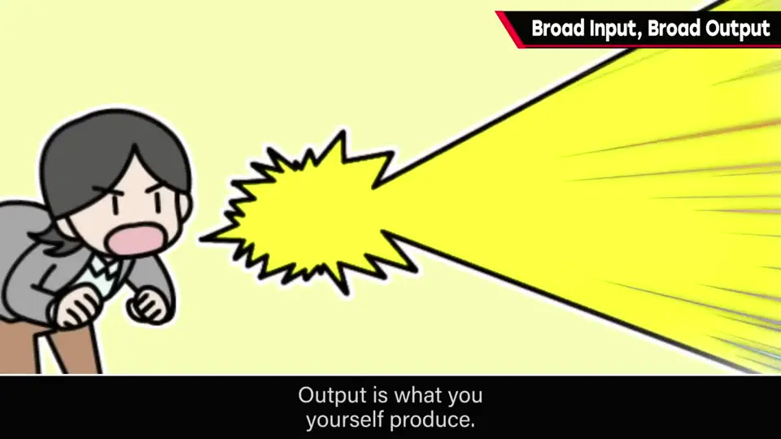
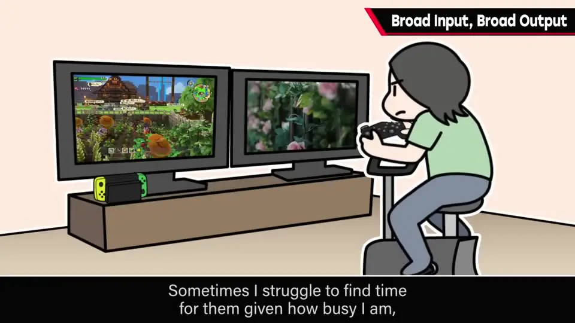
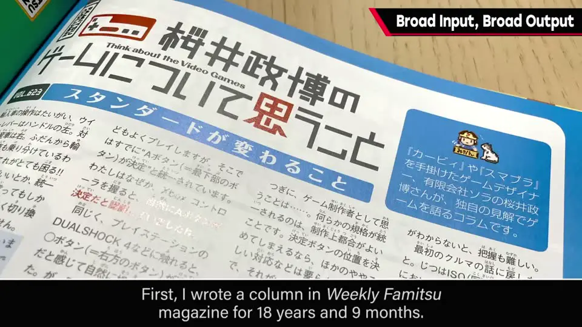
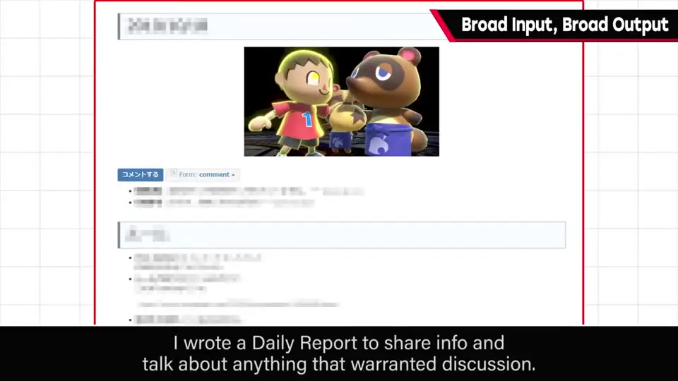
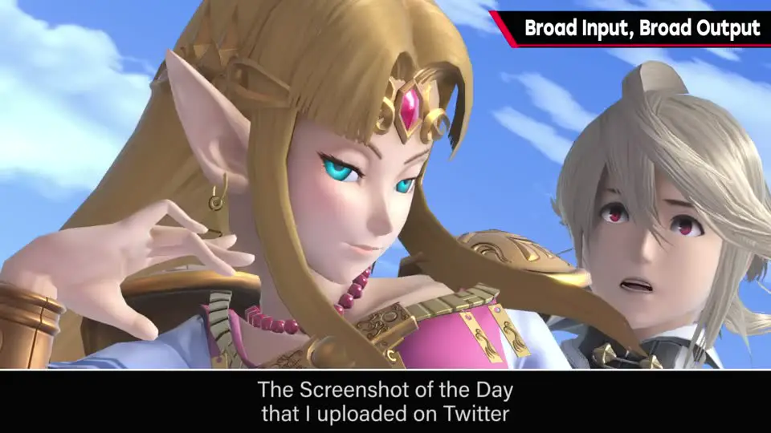
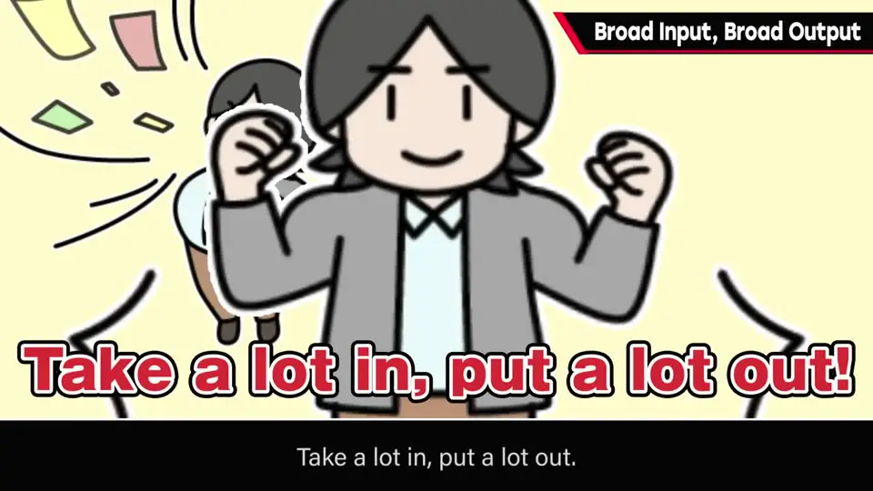

速览
樱井认为，尤其对总监来说，要做好工作，把输入和输出都做「粗」是不可或缺的，并建议把它们养成习惯、视为理所当然。输入是从外界接受的刺激：他会大量玩游戏、看影像作品，比起一直玩一款，更倾向接触更多作品，但会以通关为目标——要把握当今游戏的规模感，做出不输于它们的东西。输出是自己的发信：在《周刊 Fami 通》连载专栏 18 年 9 个月；开发现场写日报分享信息和杂谈；Twitter 上的「今日一图」源于开发中给团队的截图；这个节目也是输出的一环。多吸收、多输出。不过输入形式因人而异，不必勉强玩游戏；看同样的东西也能感受、反刍——关键是别让它左耳进右耳出。
1. 把输入和输出都做「粗」 0:04
尤其对总监来说，要做好工作，樱井觉得把输入和输出都做粗是不可或缺的。
- 输入：从外界接受的刺激。
- 输出：从自己发出的东西。
建议把两者养成习惯，变得理所当然。

2. 樱井的输入：大量玩、广泛玩 0:25

- 他的输入大量来自享受其他游戏和影像作品。
- 游戏会玩非常多的作品；忙到难以抽身时也有，但总之会玩。
- 比起一直玩一款，更倾向接触更多作品。
- 但会以看到结局为目标：要把握当今游戏的规模感，做出不输给它的东西——他认为这是必须的。
3. 樱井的输出：持续发信 1:01
- 在《周刊 Fami 通》连载专栏长达 18 年 9 个月——确实已成习惯。
- 在开发现场，用日报页面分享信息、展开各种杂谈——这是日常。
- 在 Twitter 上发的「今日一图」（Screenshot of the Day），基于开发中截的图——原本是他在团队内部做的类似的事。这也是输出习惯。
- 这个节目的发布，也是输出的一环。



多吸收、多输出。两者都活跃起来，感觉就能做出好东西。
4. 输入的形式因人而异 1:49
- 不必勉强玩游戏。
- 即使看同样的东西，能感受各种东西并反刍，就已经大不一样。
- 反过来说，要避免左耳进右耳出。

flowchart LR
I["输入
游戏 · 影像 · 各种刺激"] -->|"感受、反刍
不左耳进右耳出"| M["自己"] M --> O["输出
专栏 · 日报 · 今日一图 · 本节目"] O -.->|"养成习惯"| I
游戏 · 影像 · 各种刺激"] -->|"感受、反刍
不左耳进右耳出"| M["自己"] M --> O["输出
专栏 · 日报 · 今日一图 · 本节目"] O -.->|"养成习惯"| I
自测题
1. 樱井的「输入」习惯有哪些具体做法？
大量玩游戏和看影像作品；比起一直玩一款，更想接触更多作品；但以通关为目标，以把握当今游戏的规模感，做出不输于它们的东西。 0:25
2. 樱井举了哪些「输出」的例子？
在《周刊 Fami 通》连载专栏 18 年 9 个月；开发现场的日报（信息分享和杂谈）；Twitter 上的「今日一图」（基于开发中的截图，原本是给团队内部做的）；以及这个 YouTube 节目。 1:01
3. 是否每个人都必须靠玩大量游戏来输入？
不必。输入的形式因人而异，不用勉强玩游戏；看同样的东西也能感受、反刍，就已经大不一样。重要的是不要让输入左耳进右耳出。 1:49